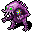

身体の歪曲 Warp Body
英語版 CrawlWiki の記事「Warp Body」(0.34 向け、2026-07-17 版)の翻訳です。原文の著者は編集履歴をご覧ください。
| | |
|---|---|
| 詠唱の騒音 | 4 |
| 呪文の騒音 | 0 |
| 射程 | LOS |
| フラグ | 混沌(Chaotic)、方向・対象指定(Dir or target)、モンスター専用(Monster)、射線の確認が必要(Needs tracer) |
| 変異性の崩壊の力でモンスターの体をねじ曲げ、わずかなダメージを与えて一時的な変異をもたらす。対象がすでに複数の一時的な変異を受けている場合は、代わりに「ガラス化」をもたらす。 |
身体の歪曲はモンスター専用の呪文で、光線を放って一時的な変異を1つと、わずかなダメージを与える。プレイヤーがすでに一時的な変異を3つ受けていると、代わりに脆弱の状態になる。モンスターに当たった場合は奇形に変異している状態になり、次に当たると脆弱の状態になる。
身体の歪曲を唱える敵は次のとおり。
- 3

ネクオゼク(ダメージ1d7)

変更履歴
- 身体の歪曲は0.34で、永続的な変異を引き起こす呪文が減らされたときに追加された。